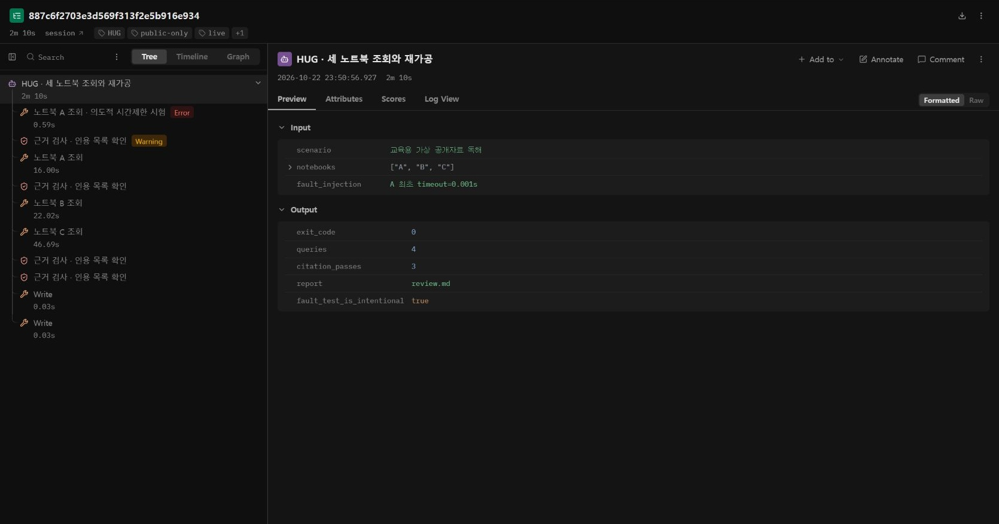
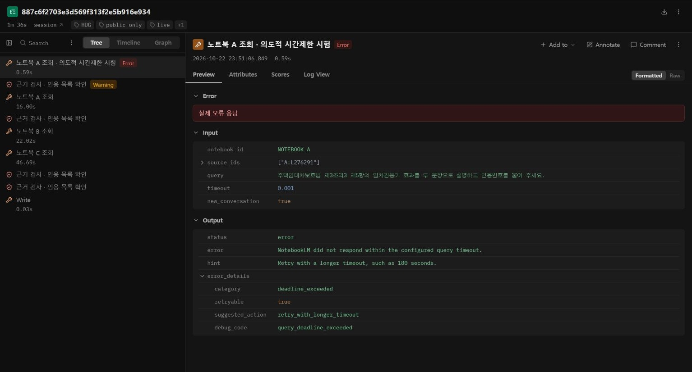
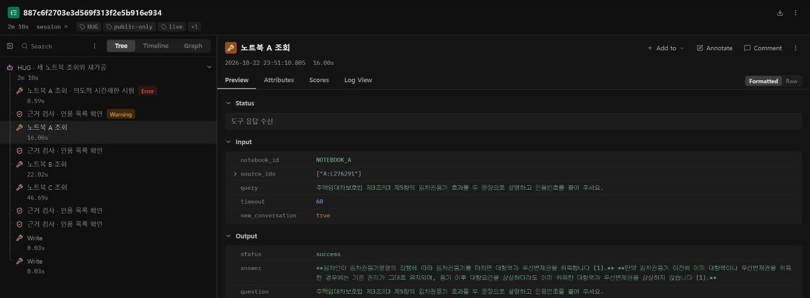
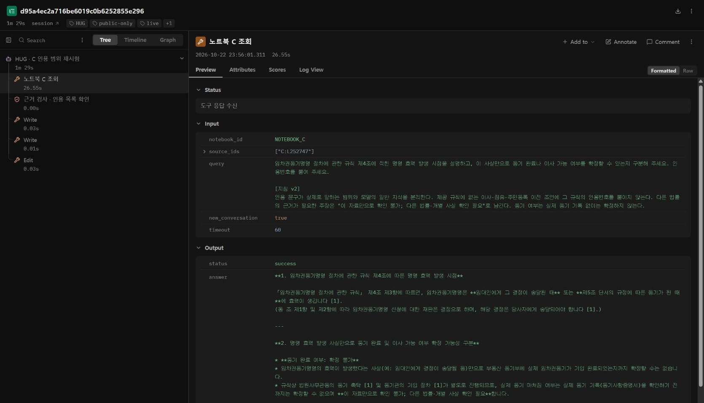
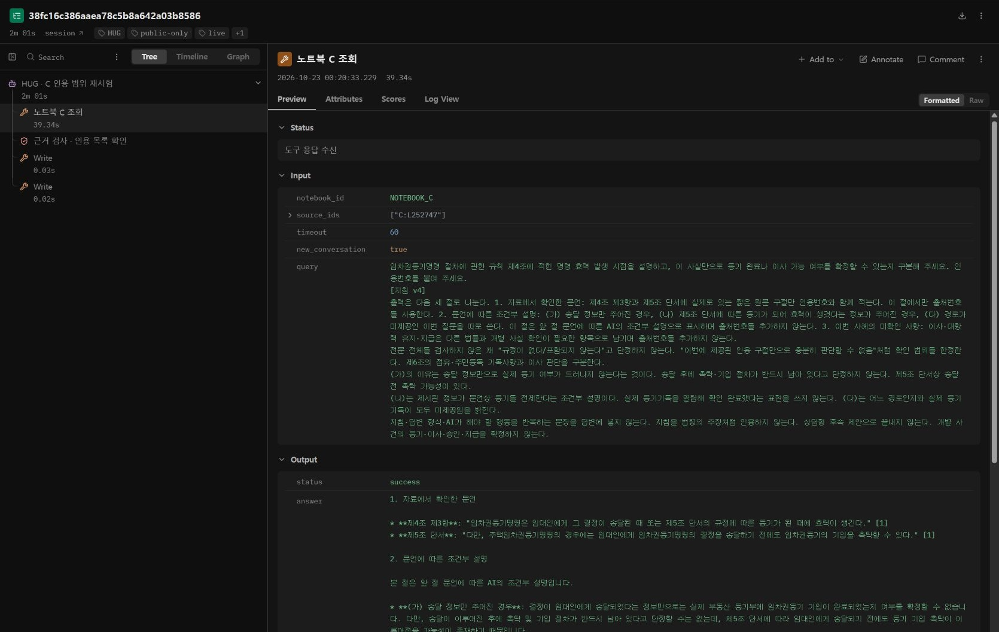
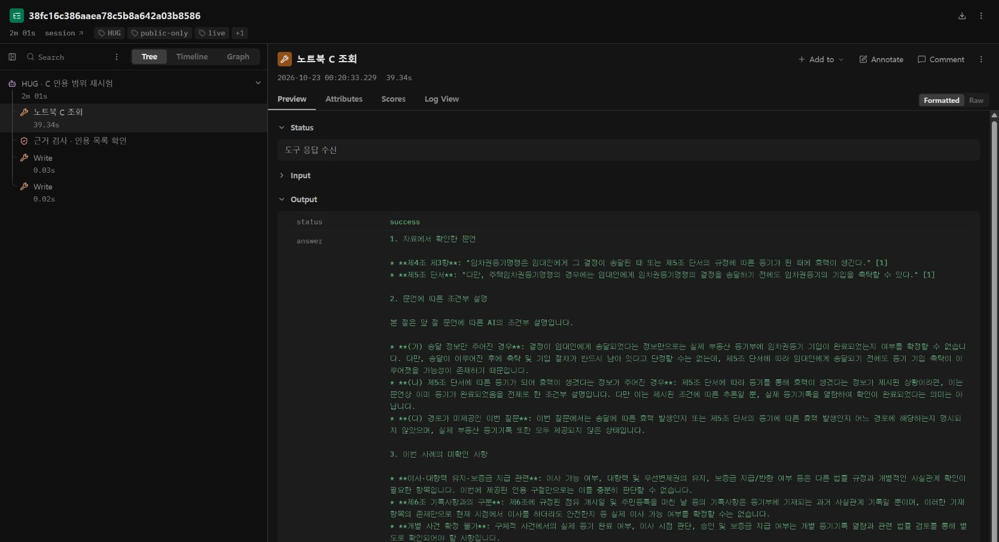

실행 기록과 오류 진단
08 · Langfuse로 실행 흐름 읽기
도구 호출·실패·재시도를 실제 기록에서 찾아봅니다.
이 페이지에서 · 바로 이동
실행 흐름을 읽는 목적
Langfuse는 기록하도록 연결한 실행 구간을 보여줍니다. 우리 실습에서는 Claude Code가 내보낸 실제 도구 호출·반환·오류·결과 파일 작성을 추적합니다. NotebookLM 내부의 청킹·검색 후보 순위나 모델의 숨은 사고를 본다고 설명하지 않습니다.
준비와 연결 범위
- Langfuse 연결을 사용하는 경우 로그인 후 공개 교육 실행을 기록할 프로젝트를 선택합니다.
- 프로젝트 키는 지정한 로컬 환경설정에만 저장합니다. 채팅·노트북 소스·교재·공개 저장소에 넣지 않습니다.
- 추적은 이 교육 작업 폴더와 공개 사례에만 적용합니다. 다른 Claude 세션을 전역으로 수집하지 않습니다.
- 실제 새 실행을 한 뒤 Trace 목록에서 해당 실행을 엽니다. 과거 로그 가져오기와 새 실행을 구분합니다.
화면에서 따라가는 순서
| 클릭할 곳 | 직접 확인 | 실패하면 할 일 |
|---|---|---|
| Trace 목록의 교육 실행 | 실행 이름·시각·사례가 내가 실행한 것인지 | 필터와 프로젝트를 확인. 연결 전의 실행이 자동으로 생긴다고 가정하지 않음 |
| 노트북 A 도구 호출 | input의 대상 자료와 timeout, output의 status | 시간 초과가 난 호출만 재시도 |
| 오류 직후 재시도 | 같은 질문인지, 무엇을 바꿨는지 | 여러 조건을 바꿨으면 원인을 단일 조건으로 단정하지 않음 |
| 근거 검사 단계 | references 수와 source_id, 원문 인용 | 답변 성공이어도 인용0이면 근거 통과를 보류 |
| 결과 작성 단계 | 어느 근거가 어느 주장으로 옮겨졌는지 | 다른 상품·신청 단계·이행 단계 혼합을 원문과 대조 |
교육용 장애 주입과 자연 발생 오류
재현 가능한 오류 실습에서는 A 첫 호출의 시간제한을 0.001초로 설정할 수 있습니다. 이는 교육을 위해 의도적으로 주입한 실제 시간제한 시험입니다. 자연 발생 장애라고 소개하지 않습니다. 실제 오류가 반환됐는지 확인하고, 같은 질문과 자료를 60초로 다시 실행합니다. 첫 호출이 성공했다면 실패라고 꾸미지 않습니다.
앞선 실제 파일럿에서는 긴 복합 질의 지연, 3자료 조회의 시간 초과, B 응답의 구조화 인용 누락이 관찰됐습니다. 그 기록과 새 Langfuse 실행은 서로 다른 실행입니다.
실제 실행 결과 · 무엇을 고쳤는가
2026.10.22 강사 PC에서 Claude Code와 MCP로 새로 실행하고 Langfuse Cloud의 추적 화면에서 수신을 확인했습니다. A는 최초 시간 초과 후 같은 질문·같은 자료로 재시도해 성공했고, B와 C도 각각 인용 1개를 반환했습니다. 결과 메모와 점검표를 실제 파일로 작성했습니다.
| 관찰 | 검사 결과 | 수정·재시험 |
|---|---|---|
| A 최초 0.001초 호출 | payload.status=error, deadline_exceeded | 질문과 자료를 유지하고 60초로 1회 재시도 → success·인용1 |
| B 공개 안내 조회 | success·인용1 | 공개 웹 Q&A와 약관 원문을 구분. 개별 가입·지급 판단 보류 |
| C 규칙 조회 | success·인용1, 그러나 이사 관련 조언까지 같은 [1]에 귀속 | 인용 존재만으로 충분하지 않음. 근거 범위를 제한한 지침 v2로 재조회 |
원문 문자열 검사도 별개입니다. 2026.10.22의 v1·v2 반환에서 긴 인용 구절 5개를 등록용 원문 TXT와 공백을 제외하고 비교했을 때 4개는 전체 일치했고, A의 1개는 뒤쪽 목록 번호 1.·2.가 빠져 전체 일치하지 않았습니다. 핵심 효과 조항의 짧은 구절은 존재했습니다. 이런 형식 변형을 곧바로 허위 내용이라고 단정하거나, 전체가 원문 그대로라고 처리하지 말고 차이와 핵심 문장을 따로 확인합니다. 수집한 TXT와의 대조는 현재 공식 원문·업무 적용에 대한 사람 검토와도 다릅니다.
지침 v2 재시험 · 좋아진 점과 남은 문제
C의 원래 질문과 같은 소스에 “제공 규칙에 없는 이사·점유·주민등록 이전 조언에는 이 규칙의 인용번호를 붙이지 말라”는 절을 추가해 새 대화로 1회 재조회했습니다. 실제 응답은 success, 인용 구절 2개였고 두 구절은 같은 소스에서 왔습니다. 인용 2개가 문서 2개라는 뜻은 아닙니다.
이번 새 응답은 이사 관련 판단을 자료만으로 확인 불가로 남기고 해당 조언에 규칙 인용번호를 붙이지 않았습니다. 그러나 “규정이 없다”는 부재 주장과 명령 효력의 발생 경로별 차이는 추가 확인이 남았습니다. 수정된 부분이 있어도 전체 합격으로 처리하지 않습니다. 재시험 결과에 남은 문제를 다음 지침 개정 후보로 기록하세요. 이는 강사 파일럿 1회 관찰이며 학생의 결과나 반복 안정성 검증을 대신하지 않습니다.
C 추가 재시험 · v2에서 v4까지
2026.10.23에 같은 C 노트북·같은 규칙 소스·같은 기본 질문을 유지하고 지침만 바꿔 새 대화로 두 번 더 조회했습니다. v3는 success·인용 구절3개, v4는 success·인용 구절1개였습니다. 모두 같은 소스에서 온 구절이며 인용 개수 증가는 품질 점수가 아닙니다.
| 지침 | 바꾼 내용과 관찰 | 판정 범위 |
|---|---|---|
| v2 | 이사 관련 인용 과대 귀속 일부 개선 | 규정이 없다는 부재 단정, 효력 발생 경로 일반화가 남음 |
| v3 | 부재 단정 범위 한정, 송달·등기·미제공 경로 구분 | 지침 문장에도 인용번호, 송달 뒤 절차가 남았다는 이유 일반화 |
| v4 | 원문 문언 / 조건부 설명 / 미확인 사항을 분리 | 핵심 문제는 이번 반환에서 개선. 메타 표현, (다)의 결론 명시, 조문별 위치는 보완 여지 |
실제 수정 전후 문장 대조
v2: “이사나 점유·주민등록 이전 … 규정은 포함되어 있지 않습니다.” 전문 전체를 검사하지 않은 상태에서 범위가 넓은 부재 주장을 했습니다.
v4: “이번에 제공된 인용 구절만으로는 이를 충분히 판단할 수 없습니다.” 확인 범위를 이번 근거로 한정했습니다.
v3: “송달 후 … 촉탁하고 … 기입하는 절차가 별도로 남아있기 때문.” 송달 전에 촉탁할 수 있는 단서를 설명에 반영하지 못했습니다.
v4: “송달이 이루어진 후에 촉탁 및 기입 절차가 반드시 남아 있다고 단정할 수는 없는데.” 그리고 송달 전 촉탁 가능성을 구분했습니다. 이는 수집한 규칙 문언을 대상으로 한 교육용 대조이며 실제 사건의 등기 확인 완료를 뜻하지 않습니다.
v4 기반의 수업용 보완 지침
출력은 세 절로 구분한다. 1. 자료에서 확인한 문언: 제4조 제3항과 제5조 단서에 실제로 있는 원문 구절과 인용번호를 적는다. 이 절에서만 출처번호를 사용한다. 2. 문언에 따른 조건부 설명: 송달 정보만 주어진 경우, 제5조 단서에 따른 등기가 되어 효력이 생겼다는 정보가 주어진 경우, 경로가 미제공인 이번 질문을 따로 쓴다. 이 절은 AI의 조건부 설명으로 표시하며 출처번호를 추가하지 않는다. 3. 이번 사례의 미확인 사항: 이사·대항력 유지·지급은 다른 법률과 개별 사실 확인이 필요한 항목으로 남긴다. 출처번호를 추가하지 않는다. 규칙 전문 전체를 검사하지 않았으므로 규정이 없다거나 포함되지 않는다고 단정하지 않는다. 이번에 제공된 인용 구절만으로 판단할 근거가 충분한지로 범위를 한정한다. 제6조의 점유·주민등록 기록사항과 이사 판단을 구분한다. 송달 정보만으로 실제 등기 여부는 드러나지 않는다. 송달 후에 촉탁·기입 절차가 반드시 남았다고 단정하지 않는다. 제5조 단서상 송달 전 촉탁 가능성이 있다. 등기에 따라 효력이 생겼다는 조건은 문언상 등기를 전제한다는 설명이다. 실제 등기기록을 열람해 확인 완료했다는 뜻으로 쓰지 않는다. 경로 자체가 미제공이면 경로와 실제 등기기록을 추가 확인한다. 지침·AI가 해야 할 행동을 법령의 주장처럼 인용하지 않는다. 개별 사건의 등기·이사·승인·지급을 확정하지 않는다. 검사표의 판단 주체를 정확히 적는다. 모델 자기점검을 사람이 직접 검토한 결과라고 표현하지 않는다.
v3 실제 응답 전체 펼치기
### 1. 임차권등기명령의 효력 발생 시점 (제4조 제3항) 「임차권등기명령 절차에 관한 규칙」 제4조 제1항 및 제2항에 따르면, 임차권등기명령 신청에 대한 재판은 결정으로 하며 당사자에게 송달해야 합니다 [1]. 제4조 제3항은 임차권등기명령의 효력 발생 시점으로 다음 두 가지 경로를 규정하고 있습니다 [1]: - **경로 (가)**: 임대인에게 그 결정이 송달된 때 [1] - **경로 (나)**: 제5조 단서의 규정에 따른 등기가 된 때 [1] --- ### 2. '등기 완료' 확정 가능 여부 (효력 발생 경로별 구별) 임차권등기명령의 효력이 생겼다는 정보만으로 등기 완료 여부를 확정할 수 있는지는 어느 경로로 효력이 발생했는지에 따라 구별됩니다 [1]: - **(가) 임대인 송달에 의한 효력 발생 정보만 주어진 경우**: 결정이 임대인에게 송달되어 효력이 발생했다는 정보만으로는 **등기 완료 여부를 알 수 없습니다** [1]. 송달 후 법원사무관등이 등기 기입을 촉탁하고(제5조 본문) 등기관이 등기부에 기입하는 절차가 별도로 남아있기 때문입니다 [1]. - **(나) 제5조 단서에 따른 등기에 의한 효력 발생 정보가 주어진 경우**: 주택임차권등기명령의 경우 결정 송달 전에도 등기 기입을 촉탁할 수 있는데(제5조 단서), 이에 따라 등기가 마쳐짐으로써 효력이 생긴 경로는 조문 문언상 **이미 등기가 마쳐진 것을 전제로 하므로 등기 완료 사실을 확인**할 수 있습니다 [1]. **경로 미확인 시 주의사항**: 어느 경로를 통해 효력이 발생했는지 특정되지 않은 상황이라면, 두 경우를 일률적으로 "효력이 생겨도 등기 완료는 알 수 없다"고 묶어서는 안 됩니다 [1]. 어느 경로인지 구별하여 실제 **등기기록(등기부) 기입 여부를 추가로 확인**해야 하며, 가상의 개별 사건에서 등기가 실제 완료되었다고 함부로 단정해서는 안 됩니다 [1]. --- ### 3. '이사 가능 여부' 확정 가능성 및 법적 판단의 분리 - **제공된 인용 구절의 범위 한계**: **이번에 제공된 인용 구절만으로는 이사 가능 여부를 판단할 근거를 충분히 확인하지 못했습니다** [1-3]. (제6조에 점유 개시일, 주민등록일 등이 등기기록 사항으로 언급되어 있으나, 이는 등기부 기재 항목일 뿐 이사 가능 시점이나 요건을 규정한 조항이 아닙니다 [1].) - **규칙 전문 규정 유무와의 구별**: 이는 '이번에 제공된 인용 구절 범위 내'에서 근거 확인이 충분하지 않다는 의미이며, 제공된 구절 외 규칙 전문 전체에 이사·점유·주민등록 관련 규정이 없다고 단정하는 것은 아닙니다 [1-3]. - **별도 법률 및 개별 사실에 따른 판단 분리**: 이사 가능 여부, 대항력·우선변제권의 유지 및 보증금 반환 등은 상위 법률(예: 주택임대차보호법) 규정과 실제 등기부 기입 완료 여부 등 개별 사실관계를 통해 종합적으로 판단해야 합니다 [1, 3]. 본 규칙의 효력 규정을 이사 가능 여부에 대한 직접적 판단 근거로 과대 귀속해서는 안 되며, 절차상 효력 경로에 관한 설명과 개별 사안에서의 최종 판단은 분리하여 다루어야 합니다 [1]. 💡 관련 법률이나 개별 사안과 관련해 추가로 확인하고 싶으신 내용이 있다면 편하게 말씀해 주세요.
v4 실제 응답 전체 펼치기
1. 자료에서 확인한 문언 * **제4조 제3항**: "임차권등기명령은 임대인에게 그 결정이 송달된 때 또는 제5조 단서의 규정에 따른 등기가 된 때에 효력이 생긴다." [1] * **제5조 단서**: "다만, 주택임차권등기명령의 경우에는 임대인에게 임차권등기명령의 결정을 송달하기 전에도 임차권등기의 기입을 촉탁할 수 있다." [1] 2. 문언에 따른 조건부 설명 본 절은 앞 절 문언에 따른 AI의 조건부 설명입니다. * **(가) 송달 정보만 주어진 경우**: 결정이 임대인에게 송달되었다는 정보만으로는 실제 부동산 등기부에 임차권등기 기입이 완료되었는지 여부를 확정할 수 없습니다. 다만, 송달이 이루어진 후에 촉탁 및 기입 절차가 반드시 남아 있다고 단정할 수는 없는데, 제5조 단서에 따라 임대인에게 송달되기 전에도 등기 기입 촉탁이 이루어졌을 가능성이 존재하기 때문입니다. * **(나) 제5조 단서에 따른 등기가 되어 효력이 생겼다는 정보가 주어진 경우**: 제5조 단서에 따라 등기를 통해 효력이 생겼다는 정보가 제시된 상황이라면, 이는 문언상 이미 등기가 완료되었음을 전제로 한 조건부 설명입니다. 다만 이는 제시된 조건에 따른 추론일 뿐, 실제 등기기록을 열람하여 확인이 완료되었다는 의미는 아닙니다. * **(다) 경로가 미제공인 이번 질문**: 이번 질문에서는 송달에 따른 효력 발생인지 또는 제5조 단서의 등기에 따른 효력 발생인지 어느 경로에 해당하는지 명시되지 않았으며, 실제 부동산 등기기록 또한 모두 제공되지 않은 상태입니다. 3. 이번 사례의 미확인 사항 * **이사·대항력 유지·보증금 지급 관련**: 이사 가능 여부, 대항력 및 우선변제권의 유지, 보증금 지급/반환 여부 등은 다른 법률 규정과 개별적인 사실관계 확인이 필요한 항목입니다. 이번에 제공된 인용 구절만으로는 이를 충분히 판단할 수 없습니다. * **제6조 기록사항과의 구분**: 제6조에 규정된 점유 개시일 및 주민등록을 마친 날 등의 기록사항은 등기부에 기재되는 과거 사실관계 기록일 뿐이며, 이러한 기재 항목의 존재만으로 현재 시점에서 이사를 하더라도 안전한지 등 실제 이사 가능 여부를 확정할 수는 없습니다. * **개별 사건 확정 불가**: 구체적 사건에서의 실제 등기 완료 여부, 이사 시점 판단, 승인 및 보증금 지급 여부는 개별 등기기록 열람과 관련 법률 검토를 통해 별도로 확인되어야 할 사항입니다.
이번 재시험에서 확인할 평가 경계
v4의 구조화 인용은 1절의 실제 조문 문언에만 붙었고, 2절의 조건부 설명과 3절의 미확인 항목에는 추가하지 않았습니다. 송달 정보만 주어진 경우와 등기를 전제한 정보가 주어진 경우를 분리했으며, 실제 사건의 등기·이사·지급을 확정하지 않았습니다. 이것을 이번 반환에서 관찰한 개선으로 기록합니다.
형식상 메타 표현, (다)에서 결론을 직접 쓰는 정도, 제6조 설명의 근거 제시에는 보완 여지가 있습니다. 한 개의 긴 청크에 여러 조문이 들어 있어 조문 위치를 따로 확인해야 합니다. 원문 TXT와 짧은 구절 대조는 법률 적용 검토와 다릅니다. 같은 지침으로 반복한 안정성 시험과 전문가 검토는 실시하지 않았습니다.
또한 모델이 만든 check.md가 점검 방법을 “사람이 읽고 판정”이라고 적었습니다. 실제 작성 주체는 Claude Code이므로 모델 자기점검입니다. 문서에 사람 검토라고 적혀 있다는 이유만으로 사람이 검토했다고 인정하지 않습니다. 위 복사용 지침에는 점검 주체를 정확히 적는 절을 추가했으며, 그 추가 절까지 포함한 새 실행은 아직 하지 않았습니다.
v1~v4 실제 도구 응답 · 비교 명세 · C 지침 내려받기
본인 연결은 수업 전 준비합니다
설치·로그인·본인 ID 설정·Langfuse 연결 순서와 실제 실행기를 포함한 개인 실습 ZIP을 제공합니다. 예제 JSON의 YOUR 값을 본인의 노트북·소스·경로로 바꿉니다. 본인의 AI가 만든 지침을 CLAUDE.md로 저장하고 실행합니다. 전송 키는 본인 프로젝트에서 별도 준비하며 배포 자료에는 포함되지 않습니다.
실행기의 기록 기능과 지침은 구분합니다. “로그를 남겨 줘”라는 문장만으로 자동 기록이 생기지는 않습니다. 이 예제는 실제 stream-json 반환을 읽는 프로그램이 도구 기록을 저장하고 Langfuse로 전송합니다. 설치·인증이 안 된 경우 자기 Claude Code의 로컬 실행 로그로 같은 진단표를 작성하되 Cloud 연결 완료라고 표시하지 않습니다.












본인이 채울 실행 점검표
- 어느 호출에서 어떤 실패가 일어났는가?
- 수정한 지침 또는 호출 조건은 무엇인가?
- 같은 입력을 다시 실행했는가?
- 재시도 후에도 남은 미확인 항목은 무엇인가?
- 사람 원문 확인이 필요한 주장은 무엇인가?
도구 참고
Langfuse · Claude Code 연결 · Langfuse SDK와 호환 버전
일부 추적 기능·화면·권한은 계정과 버전에 따라 다릅니다. Trace가 있다는 것만으로 기록이 완전하거나 답변이 정확하다고 판정하지 않습니다.
사전 연결 절차 전체 · PDF에도 포함
개인 연결 사전 준비 — Windows / 강사 확인 후 실행 이 추가 실행기는 강사 PC에서 실제 실행한 코드의 경로 설정만 개인 폴더 기준으로 바꾼 버전입니다. 학생 Team 환경·모든 OS에서 검증한 것은 아닙니다. 기본 수업은 자기 Claude Code와 로컬 로그로 진행할 수 있습니다. Langfuse는 강사 시연을 읽고, 개인 프로젝트가 준비된 사람만 직접 연결합니다. 1. Python 3.12와 로그인된 Claude Code를 준비합니다. claude --version과 claude auth status를 확인합니다. 개인 플랜 가입이 설치·기관 도구 권한을 자동 부여하지는 않습니다. 2. 새 실습 폴더에서 다음을 실행합니다. 기존 업무 폴더에 전역 후크를 설치하지 않습니다. py -3.12 -m venv .venv .venv\Scripts\python.exe -m pip install notebooklm-mcp-cli==0.15.6 -r requirements.txt $env:NOTEBOOKLM_MCP_CLI_PATH = "$PWD\.runtime\notebooklm-auth" .venv\Scripts\nlm.exe login --profile hug-training --storage protected MCP 전용으로 열린 Chrome에서 본인이 Google 로그인합니다. 비밀번호·쿠키를 채팅으로 보내지 않습니다. 기존 Chrome에 로그인했더라도 이 인증이 별도로 필요할 수 있습니다. 3. example JSON 세 파일을 각각 notebooks.json, source-registry.json, mcp-config.json으로 복사합니다. YOUR 값을 모두 본인 값으로 바꾸고 MCP 실행 파일·인증 폴더 경로를 실제 절대경로로 고칩니다. 노트북은 A/B/C 세 개, 소스는 표본 질의용 지정 문서 세 개입니다. 노트북 전체에는 각각 45개가 있어야 합니다. 4. 강사와 함께 notebook_get으로 본인 노트북의 소스 이름과 source_id를 확인합니다. 공개 목록의 L276291 같은 문서 ID와 서비스가 부여한 source_id는 다른 값입니다. 이름만 같다고 다른 파일을 연결하지 않습니다. source-registry에는 본인 UUID와 공식 URL을 넣습니다. 5. 01_harness-instruction.txt를 CLAUDE.md로 복사하고 본인 지침으로 수정합니다. 실행기는 지침과 plan.json을 읽도록 Claude Code에 요청합니다. 설치·인증 파일을 근거 소스로 올리지 않습니다. 6. 본인 Langfuse 프로젝트에서 전송 전용 키를 만들고 .runtime/langfuse.env에 직접 저장합니다. 파일 예시(실제 값은 이 문서에 쓰지 않음): LANGFUSE_PUBLIC_KEY="YOUR_PUBLIC_KEY" LANGFUSE_SECRET_KEY="YOUR_SECRET_KEY" LANGFUSE_BASE_URL="YOUR_PROJECT_REGION_BASE_URL" 프로젝트 리전의 주소를 사용합니다. 키는 수업 뒤 폐기 또는 만료 관리합니다. 계정 약관과 조직 데이터 전송 정책은 본인이 확인합니다. 내부 문서·고객정보로 실행하지 않습니다. 7. 실행: .venv\Scripts\python.exe run-langfuse.py 예상: LANGFUSE_TRACE_STARTED → 실제 QUERY_RESULT → DONE. langfuse 하위 새 실행 폴더에 trace.json, 실제 응답, review.md, check.md가 생깁니다. trace.json의 URL을 브라우저로 열어 실제 기록이 도착했는지 확인합니다. flush나 파일 존재만으로 Cloud 수신을 단정하지 않습니다. 8. A 최초 호출은 timeout=0.001의 의도적 장애 시험입니다. A 재시도60초, B/C 실제 조회, 인용 검사, 결과 작성이 이어집니다. 45개 전체 검색 부하 시험은 아닙니다. SDK4.18.0에 맞춘 예제이므로 버전을 임의로 바꾸면 API 호환성을 다시 확인합니다. 9. 인증 실패: 프로젝트·리전·키를 로컬에서 확인합니다. NotebookLM 인증 만료: 전용 로그인 재진행. 시간 초과: 질문·소스 범위를 좁히고 실패한 호출만 재시험. 인용0: 답변 문장이 있어도 보류. 키·쿠키·인코딩된 인증 헤더가 포함된 화면은 교재나 보고서에 캡처하지 않습니다. 관측 범위: Claude Code stream-json의 도구 호출/반환과 Write/Edit만 전송합니다. 모델의 숨은 사고는 전송하지 않습니다. NotebookLM 내부 검색 순위·모델별 정확한 과금·모든 로컬 동작이 보이는 것은 아닙니다. 오류를 찾는 화면이며 법적 정확도 인증이 아닙니다.